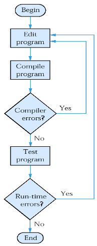

161 40000 45 100 127 11280
mov 40000, %eax
sub 100, %eax
jg 11280
mov int_rate, %eax
sub 100, %eax
jg int_error
if (int_rate > 100) message_box("Interest rate error");
if (int_rate > 100) message_box("Interest rate error");
if int_rate > 100 then message_box('Interest rate error');
|
Syntax 1.1: Simple Program header files
|
cot << "Hello, World!\n";
cout << "Hello, World!\";
cout << a/(4 - 2*2);
cout << "Hell, World\n";

You put $10,000 into a bank account that earns 5% interest per year. How many years does it take for the account balance to be double the original?
|
After Year
|
Balance
|
|
0
|
$10,000
|